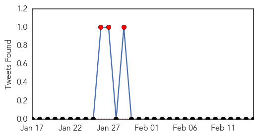
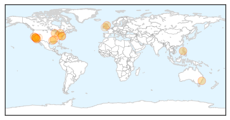
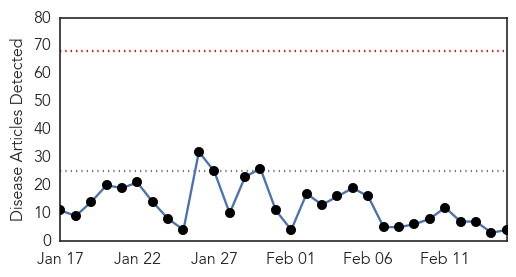
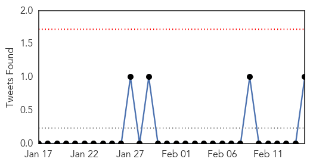
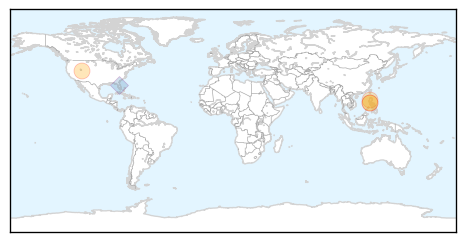

Measles
30-Day Web Trend
23 alerts, 4 warnings

30-Day Twitter Trend
3 alerts, 0 warnings

Article Locations
Article Confidences

Top Articles:
- 0.988
- Ontario measles outbreak reaches 10 cases; cluster in Quebec linked to Disneyland
- 0.983
- Sluis: Vaccination is best, only prevention
- 0.970
- California has three new measles cases, Arizona says outbreak winding down
- 0.966
- South Asia Mail
- 0.961
- America’s lethal fear of science
- 0.960
- Measles makes its way to Contra Costa : Martinez News-Gazette
- 0.958
- Majority unvaccinated in NSW measles outbreak
- 0.939
- Measles outbreak highlights importance of adult immunization
- 0.936
- California Disneyland Measles Outbreak Reaches Canada
- 0.922
- Few parents exempt children from vaccines
- 0.905
- We could learn more as soon as Monday about two suspected cases of measles in Portage County
- 0.884
- Mad Cow Disease Still Menaces U.K. Blood Supply
- 0.852
- Disneyland's worries over measles outbreak revealed in emails to California health officials -- Port Angeles Port Townsend Sequim Forks Jefferson County Clallam County Olympic Peninsula Daily NEWS
- 0.834
- Health officials: Louisiana enjoys a high measles vaccination rate; opt-outs rarely used
- 0.673
- More measles cases feared on North Olympic Peninsula after unvaccinated girl exposes school, clinic -- Port Angeles Port Townsend Sequim Forks Jefferson County Clallam County Olympic Peninsula Daily N
- 0.618
- Softer, less strident outreach may help calm US vaccine skeptics
- 0.590
- Effectiveness, safety of vaccines questioned
- 0.552
- Should you vaccinate your children? · TheJournal.ie
- 0.504
- Businesses tread carefully with vaccination policies
Top Tweets:
-
No tweets found for Feb 15, 2015
Influenza
30-Day Web Trend
0 alerts, 0 warnings

30-Day Twitter Trend
0 alerts, 0 warnings

Article Locations
Article Confidences

Top Articles:
Top Tweets:
- 0.778
- RT: Updating the avian influenza H7N9 graphs. And Ebola form yesterday. And then MERS. Good thing I don't have other hobbies